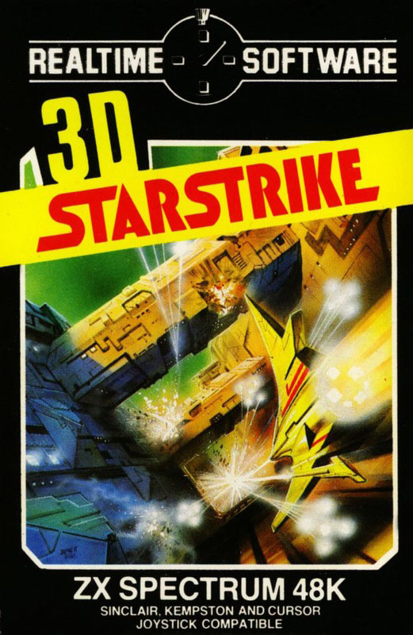
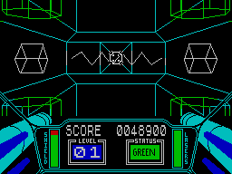
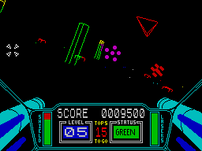

3D Starstrike


{kind=link}

| Publisher: | Realtime |
| Price: | £5.95 |
| Year: | 1984 |
| Source: | CRASH, Issue 11 |
Realtime’s second game, following their popular Tank Duel is another wire frame 3D game, set in space. This is one of the new generation of wire frame games for the Spectrum with fast moving coloured graphics. There are basically three different screens to play through, linked with computer ‘tacticals’ and culminating in a grand ‘finale’ scene. In the first section you are in the furthest reaches of space, fighting numerous alien fighter craft which hurl powerful plasma bolts at you. The object is to destroy as many enemy as you can by firing at them with the twin lasers, but it is also essential to destroy the plasma bolts as well to survive.

the forcefield
The second screen takes place on a battle planet, covered with a variety of towers. Some of them are armed, indicated by their yellow tops, and these also fire plasma bolts at your craft. Surviving through this screen takes you onto the third, and down into the trench. The trench has laser blisters on its side, which fire at you. Again it is important to destroy the bolts as well as the blisters. The trench is criss-crossed with transverse bridges and side towers, which must be dodged by weaving in and out of them. At the end of the trench is a protective forcefield, through which you must fly. But to disable the field, the two rotating cubes to either side must be shot out of the way. Failure to do so, will result in your being forced back into the trench again. If you get through unharmed, then you are shot into space and you see the planet behind explode, before going onto the next difficulty level.
The screen shows the status panel of your craft with the view beyond. The instruments show shield status and laser status, levels and score. The lasers overheat rapidly and take time to recharge. Shields are damaged by hitting enemy craft, towers, trench walls etc. as well as the enemy plasma bolts.
CRITICISM

towers
‘I was privileged to see the first ever ‘tests’ the programmers produced for this game, where you could see them ‘playing’ about with the ideas now contained in it. These were just space ships flying around in space. I was asked, at the time, whether I approved of this type of graphics. It looked as though it was going to be the beginning of a marvellous game. Seeing the finished product now, the graphics have come a long long way, maybe from the deepest, darkest depths of space itself. Although the game ‘Star Wars’ has been attempted to be copied many times in recent months on the Spectrum, none have really gone for the feeling and graphic presentation, instead they have added a gimmick to help sell the game, such as speed. This version definitely does have a great deal of graphic presentation, although wire frame, they are very detailed and well within the speed limits of a playable game. Colour has been used exceptionally well to add interest to the game with no tragic attribute problems. It must be pointed out that this game can be played quite easily by beginners with a skill level setting that increases with your skill, and does not just throw you in the deep end with a very difficult game to begin with. I think this is a big asset to any game. Starstrike is a very addictive, playable mindless shoot em up — what the majority of arcade freaks love!’
‘This game is bound to be compared with Dark Star but they are two totally different games. Dark Star has its tremendous speed, but Starstrike goes in more for the graphical side of the game. It’s the best ‘Star Wars’ type game to date, offering more playability than the arcade original with various extra screens and enemies added. It is very addictive and will offer hours of enjoyment to the arcade player, especially as it is a good hi-scoring game, more so than their earlier Tank Duel. It’s instantly playable because it offers skill levels from total wally to arcade perfection.’
‘The first thing I liked about Starstrike was the plasma bolts, nice big solid things that look real mean, and they spin as they come towards you, getting bigger and bigger. The space ships are also big and well detailed, and the explosions are great, the ships breaking up into their constituent parts before sailing away into space. The trench effect is exceptionally good 3D, and has you swaying in your seat as you weave between the towers and up over the bridges. On the planet if you hit a tower, your craft goes into an ‘out of control’ spin momentarily, which just adds to the overall effect and realism. This is a pleasing and high-performing game.’
COMMENTS
| Control keys: | Q–T/A–G climb/dive, Y–I and H–K left, O–P and L–ENTER right, any bottom row to fire |
| Joystick: | Kempston, Sinclair 2, AGF, Protek |
| Keyboard play: | Responsive and well laid out |
| Use of colour: | Excellent |
| Graphics: | Excellent 3D wire frame, smooth and large |
| Sound: | Continuous |
| Skill levels: | 4 selectable but progressive up to and beyond 25 |
| Lives: | 1 with percentage of damage |
| General rating: | Excellent, addictive, playable and good value. |
| Graphics: | 93% |
| Playability: | 96% |
| Getting started: | 91% |
| Addictive qualities: | 94% |
| Value for money: | 94% |
| Overall: | 93% |